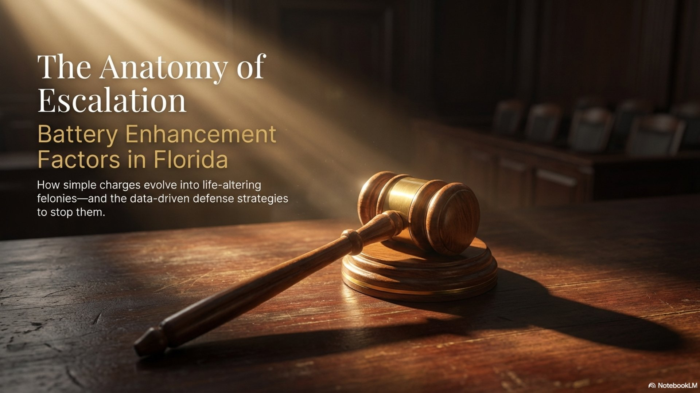
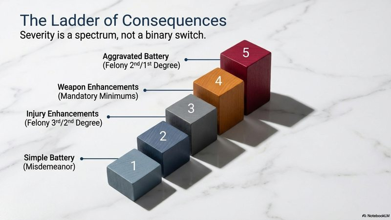
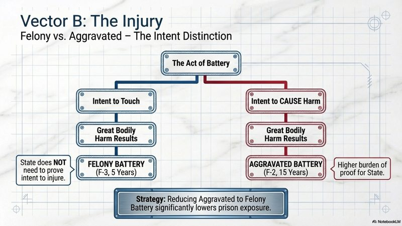
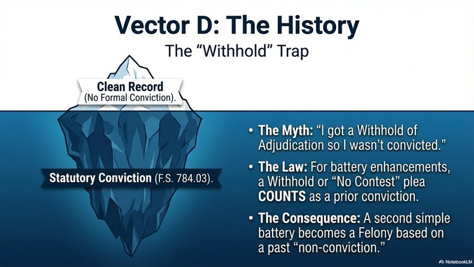

Battery Enhancement Factors in Florida: When Simple Battery Becomes a Felony

You were expecting a misdemeanor. Then the prosecutor filed felony charges. What happened? In Florida, a simple battery charge can escalate dramatically based on specific "enhancement factors" -- circumstances that automatically increase the severity of the charge, the potential sentence, or both. Understanding these factors is critical because they often determine whether you're facing county jail or state prison.
Florida law provides several categories of battery enhancements. Some are based on who the alleged victim is. Others depend on what was used during the offense. And some are triggered by what happened before -- your prior record. Here's how each one works and what it means for your case.
The Starting Point: What Actually Constitutes Battery
Before understanding how battery charges escalate, you need to understand how low the bar is to begin with. Under Florida's Standard Jury Instructions (FSJI-CR 8.3), the State must prove only that the defendant "actually and intentionally touched or struck [the victim] against his/her will" -- or that the defendant intentionally caused bodily harm. That's it. No injury required. No force required. Any unwanted touching can be a battery.
Florida courts have extended this even further. In Fey v. State, 125 So. 3d 828 (Fla. 4th DCA 2013), the court held that an intentional touching includes situations where the defendant knows the contact is "substantially certain" to result from their act. And under Clark v. State, 783 So. 2d 967 (Fla. 2001), a battery can result from touching something other than the victim's body -- like an occupied vehicle -- if the object has such an intimate connection with the person that it's regarded as an extension of the person.
Why This Matters
Simple battery is already a first-degree misdemeanor carrying up to one year in jail. But because the baseline definition is so broad -- any unwanted touching -- it means any physical altercation can become the foundation for an enhanced charge. The enhancement factors below don't change what constitutes a battery. They change the consequences.

Victim-Based Enhancements: When the Person Matters
Florida has carved out specific protections for certain categories of people. If the person you're accused of battering falls into one of these groups, a simple battery -- normally a first-degree misdemeanor -- automatically becomes a third-degree felony punishable by up to 5 years in prison.
Law Enforcement and First Responders (F.S. 784.07)
Battery on a law enforcement officer is the most commonly charged victim-based enhancement in Orange County. Under F.S. 784.07, this applies to a broad list of protected persons:
- Law enforcement officers -- police, deputies, state troopers, corrections officers
- Firefighters and EMTs -- including volunteer firefighters
- Security guards -- when performing lawful duties
- Public transit employees -- bus drivers, Lynx operators
- Code enforcement officers -- county and municipal inspectors
Under the Florida Standard Jury Instructions (FSJI-CR 8.11), the State must prove four separate elements to sustain this enhancement: (1) the battery itself, (2) the victim's protected status, (3) the defendant knew the victim was a law enforcement officer or protected person, and (4) the victim was engaged in the lawful performance of duties at the time.
Critical Detail: Knowledge Is Required
Unlike many other enhancements, battery on a law enforcement officer requires proof that the defendant actually knew the victim was an officer -- not just "should have known." Additionally, the officer must have been lawfully performing duties at the time. An off-duty officer in a personal altercation, or an officer acting outside the scope of lawful authority, may not trigger the enhancement. Both of these elements are factual questions your attorney can challenge.
Persons 65 or Older (F.S. 784.08)
Battery on a person 65 years of age or older is automatically reclassified to a third-degree felony under F.S. 784.08(2)(c). The Florida Standard Jury Instructions (FSJI-CR 8.16) make the harsh reality explicit: "It is not necessary for the State to prove that [defendant] knew or had reason to know the age of [victim]." This is strict liability as to the victim's age -- the only question is whether the victim was 65 or older at the time.
If the battery also causes great bodily harm or involves a deadly weapon, the charge jumps further to aggravated battery on a person 65 or older under FSJI-CR 8.14 -- a first-degree felony carrying up to 30 years in prison. The strict liability on age still applies. The statute also prohibits withholding adjudication, meaning a conviction is mandatory if found guilty.
Elected Officials, School Staff, and Other Protected Personnel (F.S. 784.081)
F.S. 784.081 covers a broad list of protected persons beyond law enforcement. Battery on any of the following becomes a third-degree felony:
- Elected officials -- any person elected to public office
- School employees -- public and private school district staff
- DCF employees -- Department of Children and Families workers
- DOH employees -- Department of Health staff and contract providers
- Sports officials -- referees, umpires, and linesmen registered with recognized organizations, when actively participating or immediately following an athletic contest
The sports official enhancement is worth highlighting: battery on a referee during or immediately after a game is a third-degree felony. Youth league parents, take note.
Injury-Based Enhancements: When the Harm Is Severe
Felony Battery: Great Bodily Harm (F.S. 784.041)
If the alleged battery causes great bodily harm, permanent disability, or permanent disfigurement, the charge jumps from simple battery to felony battery -- a third-degree felony. The Florida Standard Jury Instructions define "great bodily harm" as "great as distinguished from slight, trivial, minor, or moderate harm, and as such does not include mere bruises" (Wheeler v. State, 203 So. 3d 1007 (Fla. 4th DCA 2016)).
That definition matters. It means the prosecution must prove injuries beyond the ordinary -- not just that someone got hurt, but that the harm was significant enough to clear the "great bodily harm" bar. Examples courts have recognized include:
- Broken bones requiring surgery
- Loss of consciousness or concussion
- Injuries requiring extended hospitalization
- Permanent scarring or disfigurement
- Loss or impairment of a bodily function
The Intent Distinction That Changes Everything
There is a critical difference between felony battery (F.S. 784.041) and aggravated battery (F.S. 784.045) that many people miss. Under FSJI-CR 8.5, felony battery requires only that the defendant intentionally touched someone and great bodily harm resulted. The State does not need to prove the defendant intended to cause serious injury -- only that the touching itself was intentional.
Aggravated battery, by contrast, requires that the defendant "intentionally or knowingly caused" great bodily harm. That specific-intent requirement is a higher bar for the prosecution. This distinction matters for defense strategy: if the State can't prove the defendant intended serious harm, the charge may be reduced from aggravated battery (F-2, up to 15 years) to felony battery (F-3, up to 5 years).

Strangulation (F.S. 784.041(2))
Strangulation is one of the most serious battery enhancements in Florida. Under FSJI-CR 8.5(a), domestic battery by strangulation requires proof that the defendant "knowingly and intentionally" impeded breathing or circulation -- a dual mens rea standard higher than simple battery's "intentionally touched." The State must also prove the act either created a risk of or caused great bodily harm, and that the defendant was a family/household member or dating partner of the victim.
A separate instruction (FSJI-CR 8.5(b)) covers battery by strangulation against any victim -- not just domestic partners. Both are third-degree felonies. What makes strangulation charges particularly aggressive is that the prosecution can satisfy the harm element by showing the act merely created a risk of great bodily harm -- actual injury is not required. In domestic cases, strangulation charges often come with a no-bond hold at first appearance.
Weapon Enhancements: The 10-20-Life Law
When a battery involves a deadly weapon, the charge elevates to aggravated battery under F.S. 784.045 -- a second-degree felony punishable by up to 15 years in prison. But if that weapon is a firearm, Florida's 10-20-Life law (F.S. 775.087) introduces mandatory minimum sentences:
10-20-Life Mandatory Minimums for Battery
- 10 years mandatory minimum -- Possessing or displaying a firearm during the battery
- 20 years mandatory minimum -- Discharging a firearm during the battery
- 25 years to life -- Discharging a firearm that causes great bodily harm or death
These are mandatory minimums, meaning the judge cannot sentence below these thresholds regardless of mitigating circumstances. There is no early release, no gain time, no judicial discretion. This is why weapon-related battery charges demand immediate, aggressive defense work.
The jury instructions define "deadly weapon" broadly: any object likely to cause death or great bodily harm when used in the ordinary manner contemplated by its design. But crucially, even objects not designed as weapons qualify if they were "used or threatened to be used in a manner likely to cause death or great bodily harm." Courts have found knives, vehicles, bats, bottles, and even dogs to qualify as deadly weapons depending on how they were used -- it's a manner-of-use test, not an object-identity test.
When the State charges aggravated battery under both theories -- great bodily harm and deadly weapon -- the jury must be unanimous on which theory they find proven. Under Miller v. State, 123 So. 3d 595 (Fla. 2d DCA 2013), it is improper for some jurors to convict on the great-bodily-harm theory while others convict on the deadly-weapon theory. The trial judge must give a special unanimity instruction. Failure to do so is reversible error.
Prior Record Enhancements: When Your History Follows You
Prior Battery Conviction (F.S. 784.03(2))
A second battery offense becomes a third-degree felony if you have a prior conviction for battery, aggravated battery, or felony battery. The prior conviction can be from any jurisdiction -- not just Florida. Federal convictions and out-of-state convictions count.
Domestic Violence Repeat Offender (F.S. 741.283)
A second domestic violence battery becomes a third-degree felony. But the enhancement doesn't stop at the charge level. Under F.S. 741.283, when a domestic violence offense intentionally causes bodily harm, mandatory minimum jail sentences apply: 10 days for a first offense, 15 days for a second offense, and 20 days for a third or subsequent offense. These minimums increase further -- to 15, 20, and 30 days respectively -- if the violence occurs in the presence of a child under 16.

The Withhold Trap: Why Your "Non-Conviction" Still Counts
This is one of the most misunderstood aspects of battery law in Florida. In most criminal contexts, a withhold of adjudication is not considered a conviction. If you received a withhold on a prior charge, you can generally answer "no" to questions about criminal convictions on job applications, housing forms, and professional licensing applications. Most people -- and even some attorneys -- assume a withhold provides the same protection when it comes to felony enhancement.
It does not.
F.S. 784.03(2) explicitly defines "conviction" for battery enhancement purposes to include any determination of guilt -- "regardless of whether adjudication is withheld or a plea of nolo contendere is entered." The Florida Standard Jury Instructions (FSJI-CR 8.3) incorporate this exact language. This is a battery-specific statutory override -- the legislature intentionally closed this loophole for repeat battery offenders. Not every Florida statute treats withholds and nolo pleas the same way.
The Scenario That Catches People Off Guard
Three years ago, you got into a bar fight. Your attorney negotiated a plea to misdemeanor battery with adjudication withheld. You completed probation, paid fines, and moved on. You weren't "convicted." Then you're arrested for a new battery. You expect another misdemeanor. Instead, the prosecutor files felony battery -- a third-degree felony with up to 5 years in prison -- because your prior withhold counts as a "conviction" under F.S. 784.03(2).
Nolo Contendere Doesn't Protect You Either
The same statute captures nolo contendere pleas (no contest pleas). Many defendants enter a nolo plea specifically to avoid creating an admission of guilt that could be used in a civil lawsuit. While that strategy may work for civil liability purposes, F.S. 784.03(2) is clear: a nolo plea resulting in a determination of guilt still qualifies as a prior conviction for battery enhancement.
In practical terms, the only ways to avoid having a prior battery count as a "conviction" under this statute are:
- Dismissal or nolle prosequi -- The charge was dropped entirely
- Acquittal -- You were found not guilty at trial
- Pre-trial diversion completion -- Some diversion programs result in dismissal, not a determination of guilt
- Expungement or sealing -- A sealed or expunged record may not be usable, though prosecutors can sometimes still access these records
Why This Matters for First-Time Battery Defendants
If you're facing a battery charge right now and considering a plea with adjudication withheld, understand that a withhold will not protect you from felony enhancement if you ever face a second battery charge. This makes the decision at the front end critical. Your attorney should discuss whether fighting for a dismissal, a reduced charge (like disorderly conduct), or pre-trial diversion is worth the additional effort -- because the long-term consequences of a battery withhold are more serious than they appear.
Pregnant Victim Enhancement
Under FSJI-CR 8.4(a), battery on a pregnant victim is aggravated battery -- a second-degree felony carrying up to 15 years. The jury instructions require proof of three elements: (1) the battery itself, (2) the victim was pregnant at the time, and (3) the defendant "knew or should have known" the victim was pregnant. No injury is required. No deadly weapon is needed. The pregnancy itself is the enhancing factor.
The "knew or should have known" standard is a middle ground -- it's more protective of defendants than the strict-liability age rule for elderly victims (where knowledge is irrelevant), but less protective than the LEO enhancement (which requires actual knowledge). If the pregnancy was not visible and the defendant had no reason to know, the enhancement may not apply.
How a Defense Attorney Challenges Enhancement Factors
Enhancement factors aren't automatic wins for the prosecution. Each one has specific elements that must be proven beyond a reasonable doubt. The Florida Standard Jury Instructions -- the actual language read to juries -- reveal exactly where the State's burden is heaviest and where defense attorneys can challenge.
The Knowledge Gap: Different Standards for Different Enhancements
One of the most important -- and least understood -- defense angles involves what the defendant had to know. The standard varies dramatically across enhancement types:
Knowledge Requirements by Enhancement
- Battery on LEO (F.S. 784.07) -- Defendant must have actually known the victim was an officer. Highest bar for the State.
- Battery on pregnant victim (F.S. 784.045(1)(b)) -- Defendant knew or should have known the victim was pregnant. Middle standard.
- Battery on person 65+ (F.S. 784.08) -- No knowledge required. Strict liability as to age. Lowest bar for the State.
- Strangulation (F.S. 784.041(2)) -- "Knowingly and intentionally" impeded breathing. Dual mens rea -- the act itself must be knowing.
These distinctions create real defense opportunities:
- Challenging victim status -- Was the officer actually on duty and performing lawful duties? Did the defendant know? If the officer was in plainclothes or off-duty, the knowledge element may fail.
- Contesting injury severity -- Under Wheeler, "great bodily harm" must be great as distinguished from slight, trivial, minor, or moderate harm. Mere bruises don't qualify. Independent medical review can dispute the prosecution's characterization.
- The intent distinction -- If the State charges aggravated battery but can only prove the touching was intentional (not that the defendant knowingly caused serious harm), the charge should be reduced to felony battery.
- Prior record accuracy -- Was the prior offense truly a "conviction" under F.S. 784.03(2)? Was it from a qualifying jurisdiction? Were constitutional rights violated in the prior case?
- Self-defense -- Florida's Stand Your Ground law provides immunity from prosecution entirely. If the underlying battery was justified, no enhancement applies.
- Weapon classification -- Was the object truly a "deadly weapon"? The jury instruction uses a manner-of-use test, and the jury must be unanimous on which theory of aggravated battery they find proven (Miller v. State).
In many cases, the difference between a misdemeanor and a felony comes down to one contested element. That's why having an attorney who understands the jury instructions -- the exact language the jury will hear -- can change the trajectory of your case.
Facing Enhanced Battery Charges in Orlando?
If your battery charge has been enhanced to a felony, you need an attorney who understands exactly which elements the prosecution must prove -- and where those elements can be challenged. Contact Lotter Law for a free consultation.
Call (407) 500-7000 or email jeff@jlotterlaw.com

Jeff Lotter
Criminal Defense Attorney & Former Florida State Trooper. Jeff brings a unique law enforcement perspective to criminal defense, helping clients in Orlando and Central Florida navigate the justice system.
Related Articles
Battery Charges in Florida: Degrees, Defenses & What to Expect
The companion guide covering the three degrees of battery charges and common defense strategies.
The "No Bond" Hold in Domestic Violence Cases
How domestic violence battery charges affect your bond and pretrial release in Orange County.
Florida Stand Your Ground Law Explained
Self-defense is the most powerful defense to battery charges. Learn how Stand Your Ground immunity works.
Florida Criminal Punishment Scoresheet Explained
How felony battery enhancements affect your sentencing scoresheet and prison exposure.